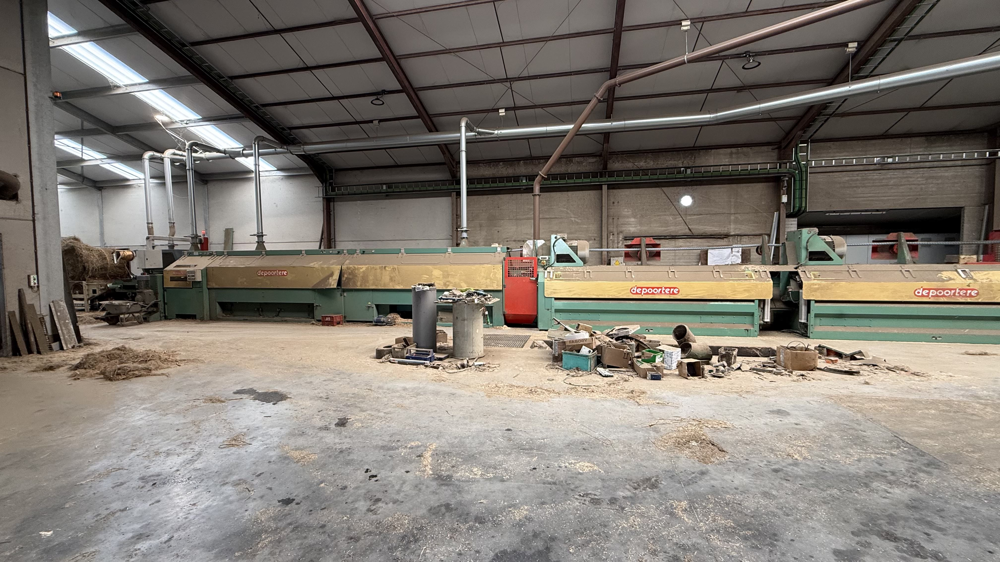

Eerlijkheid
Wij communiceren open en correct over onze producten, onze kwaliteit en onze service.
Over ons
Agralin werd opgericht op 18 juli 1995 en groeide uit tot een betrouwbare naam in de lokale vlasverwerking. Doorheen de jaren zijn eerlijkheid, kwaliteit en service steeds de basis gebleven van onze werking.

Ons verhaal
Wat begon als een familiale onderneming met een duidelijke visie, groeide stap voor stap uit tot een bedrijf dat bekendstaat om zijn persoonlijke benadering en betrouwbare service. Bij Agralin geloven we dat een sterke samenwerking start met vertrouwen.
Daarom kiezen wij bewust voor heldere communicatie, correcte afspraken en producten waarvan wij de kwaliteit eerlijk toelichten. Onze klanten weten waar ze aan toe zijn, en net daarin schuilt onze sterkte.
Onze waarden
Wij communiceren open en correct over onze producten, onze kwaliteit en onze service.
Wij streven niet naar meerdere kwaliteitsniveaus, maar naar een constante en zo hoog mogelijke standaard.
Wij geloven in een betrouwbare opvolging en een persoonlijke aanpak voor elke professionele klant.
Contacteer ons
Neem rechtstreeks telefonisch contact met ons op. Zo kunnen wij uw vraag snel en persoonlijk behandelen.